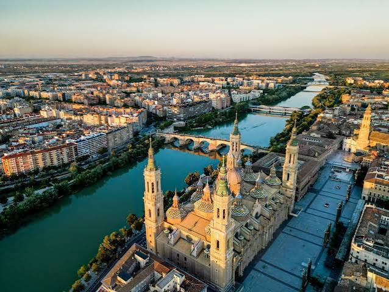

Questa foto è stata scattata in volo sulla splendida città di saragozza, uno dei centri più importanti e grandi della parte baska della spagna. Le cose assolutamente da visitare di questa città sono senza dubbio la grande cattedrale, la stazione dei treni e tutto il quartiere adiacente, famoso per le sue case molto colorate e particolari